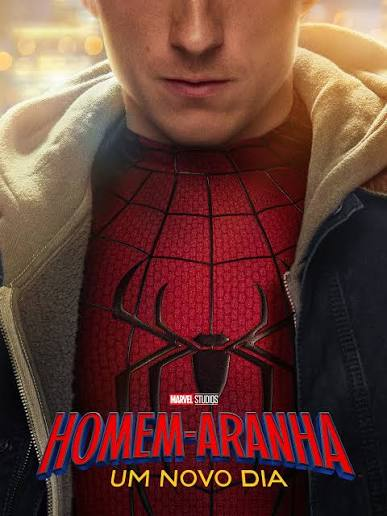
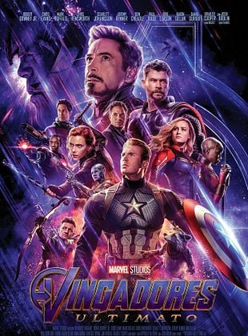
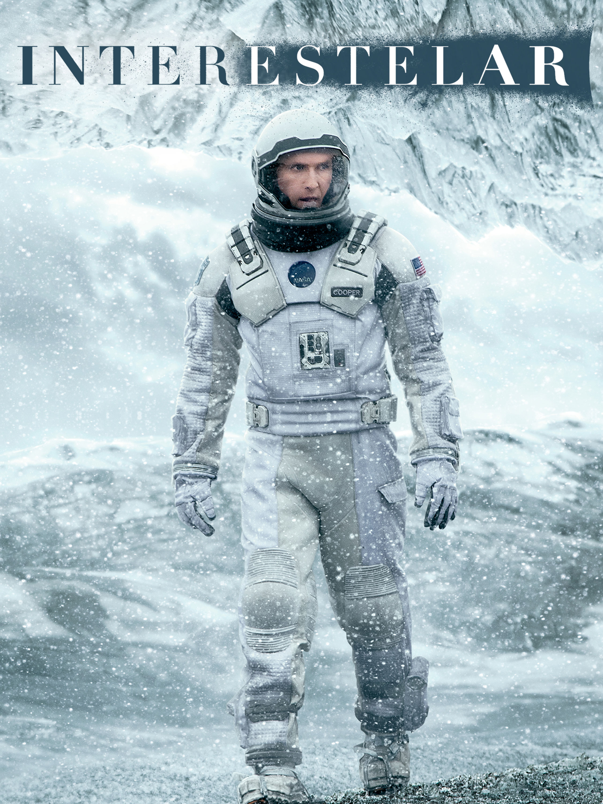
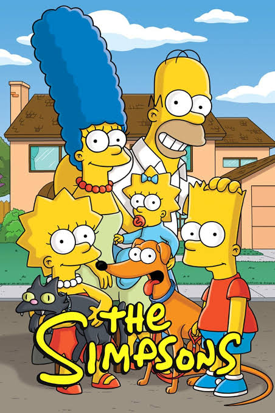

Homem-Aranha: Um Novo Dia mostra Peter Parker tentando recomeçar sua vida como Homem-Aranha após grandes mudanças, enquanto enfrenta novos desafios e inimigos.

Ultimato mostra os heróis restantes tentando reverter as consequências do estalo de Thanos e trazer de volta as pessoas que desapareceram. Para isso, eles enfrentam uma batalha decisiva que pode mudar o destino do universo.

nterestelar acompanha astronautas que viajam pelo espaço em busca de um novo lar para a humanidade, enfrentando desafios e descobrindo mistérios sobre o tempo, o espaço e o amor.

Os Simpsons acompanha a família Simpson, uma família divertida e atrapalhada que vive em Springfield e passa por situações engraçadas do dia a dia.

Batman: O Cavaleiro das Trevas mostra Batman enfrentando o Coringa, um criminoso caótico que ameaça Gotham e coloca seus cidadãos e aliados em perigo.